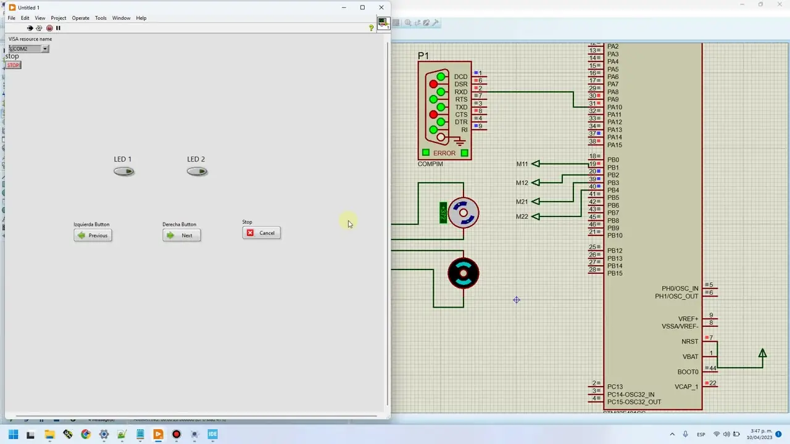

Coloca dos LEDs (interruptores) y tres botones: Izquierda, Derecha y Stop. Los encuentras en Silver → Boolean.
Transmitiremos solo cuando haya un cambio, no a cada rato, para no saturar al microcontrolador.
En esta clase en vivo hacemos el camino contrario al de la clase anterior: LabVIEW transmite y el STM32 recibe. En LabVIEW usamos una Event Structure para transmitir solo cuando cambia un botón (motor derecha, izquierda y stop), con órdenes en texto que terminan en '*'. En Proteus armamos un puente H L298 con dos motores, conectamos el COMPIM al RX del micro y en CubeIDE agregamos a la librería uart las funciones de lectura. Con uartx_read_text leemos hasta el '*', y con strstr decidimos qué hacer con el motor.

Coloca dos LEDs (interruptores) y tres botones: Izquierda, Derecha y Stop. Los encuentras en Silver → Boolean.
Transmitiremos solo cuando haya un cambio, no a cada rato, para no saturar al microcontrolador.
En el diagrama de bloques coloca VISA Configure Serial Port con un control para el recurso, una constante de 9600 y el carácter de terminación en False.
Agrega un While Loop con su botón de stop y, dentro, una Event Structure (Structures → Event Structure).
Clic derecho en el borde de la Event Structure → Add Event Case. Elige el botón Izquierda y el evento Value Change.
Clic derecho sobre el botón → Mechanical Action. Elige una acción tipo latch para que el botón vuelva solo a su estado después de presionarlo.
La acción mecánica cambia lo que llega en NewVal. Revisa cuál elegiste antes de comparar.
Compara NewVal con una constante verdadera (Equal?).
Usa un Select: si es verdadero envía la orden, si es falso envía una cadena vacía.
Las constantes deben ser String Constant (de la paleta String), no numéricas.
Conecta la salida a VISA Write.
Orden izquierda: motorizq*
Orden derecha: motorder*
Orden stop: motorstop*Todas las órdenes terminan en '*', que es el carácter con el que el micro sabe que llegó el final.
Clic derecho en la Event Structure → Duplicate Event Case, elige el botón Derecha y cambia solo el texto de la orden. Repite para Stop.
Fuera del While Loop pon VISA Close y Simple Error Handler.
Con el par de puertos virtuales, LabVIEW en COM2 y Hercules en COM1. Cada vez que presionas un botón debe llegar su orden a Hercules.
Busca el L298 y dos motores DC (uno con inercia y otro sin ella, cualquiera funciona).
A la izquierda van las señales de control y a la derecha la potencia. Conecta VS al voltaje del motor (por ejemplo +12 V) y SENSA/SENSB a tierra si no vas a medir corriente.
Coloca Logic State en IN1..IN4 y en los enables para entender el puente.
Con ENA en 0 el motor no gira. Con ENA en 1: IN1=1, IN2=0 gira a un lado; IN1=0, IN2=1 gira al otro; si son iguales, frena.
Más adelante el enable recibe una señal PWM para controlar la velocidad. Hoy lo dejamos fijo en 1.
Reemplaza los Logic State de IN1..IN4 por terminales Default con nombres M11, M12, M21 y M22 (motor, pin). Deja los enables en 1.
En el .ioc activa USART1 en Asynchronous a 9600. Queda en PA9 (TX) y PA10 (RX). Aquí el RX es obligatorio porque el micro recibe.
Configura cuatro pines como GPIO_Output con etiquetas M11, M12, M21 y M22, los mismos nombres de Proteus.
El COMPIM no va cruzado en Proteus: une el RX del COMPIM con el RX del micro (PA10).
Pon el COMPIM en el puerto virtual libre (COM1) a 9600.
uartx_read lee un solo byte y es bloqueante: espera hasta que llegue un dato.
uartx_read_text limpia el buffer con memset y guarda bytes hasta que llega el carácter final o hasta llenar el tamaño máximo.
uint8_t uartx_read(UART_HandleTypeDef *huart)
{
uint8_t dato_rx_ = 0;
HAL_UART_Receive(huart, &dato_rx_, 1, HAL_MAX_DELAY);
return dato_rx_;
}
void uartx_read_text(UART_HandleTypeDef *huart, uint8_t *info, const uint8_t final, uint16_t cuanto)
{
uint8_t dato_rx = 0;
char i = 0;
memset(info, 0, cuanto); // limpia el buffer
while (dato_rx != final) // lee hasta que llegue el final
{
dato_rx = uartx_read(huart);
*info = dato_rx; // lo guarda en el buffer
info++;
i++;
if (i > cuanto - 1) break; // si llegan demasiados datos, sale
}
}El tipo exacto del último parámetro no se ve completo en el video. Usa el de tu uart.h.
Declara el buffer como variable global y en el while lee hasta el '*' o hasta 50 caracteres.
char trama_rx[50];
while (1)
{
uartx_read_text(&huart1, (uint8_t*)trama_rx, '*', 50);
procesa();
}Crea una función por acción. Cada una pone la combinación de pines del puente H.
void m1derecha(void)
{
HAL_GPIO_WritePin(M11_GPIO_Port, M11_Pin, 0);
HAL_GPIO_WritePin(M12_GPIO_Port, M12_Pin, 1);
}
void m1izquierda(void)
{
HAL_GPIO_WritePin(M11_GPIO_Port, M11_Pin, 1);
HAL_GPIO_WritePin(M12_GPIO_Port, M12_Pin, 0);
}
void m1stop(void)
{
HAL_GPIO_WritePin(M11_GPIO_Port, M11_Pin, 0);
HAL_GPIO_WritePin(M12_GPIO_Port, M12_Pin, 0);
}strstr busca si la trama recibida contiene la orden. Usa if / else if, porque solo llega una orden a la vez.
Recuerda llamar a procesa() después de leer; en la clase el motor no se movía hasta que se agregó esa llamada.
#include <string.h>
void procesa(void)
{
if (strstr(trama_rx, "motorder")) m1derecha();
else if (strstr(trama_rx, "motorizq")) m1izquierda();
else if (strstr(trama_rx, "motorstop")) m1stop();
}En la pantalla del video la segunda línea quedó llamando a m1derecha. Aquí ya está corregida con m1izquierda.
Corre Proteus y el VI de LabVIEW: el motor gira a un lado o al otro según el botón.
Tarea: agregar el stop, el segundo motor, los LEDs con órdenes compuestas y enviar las mismas órdenes desde el celular por Bluetooth.